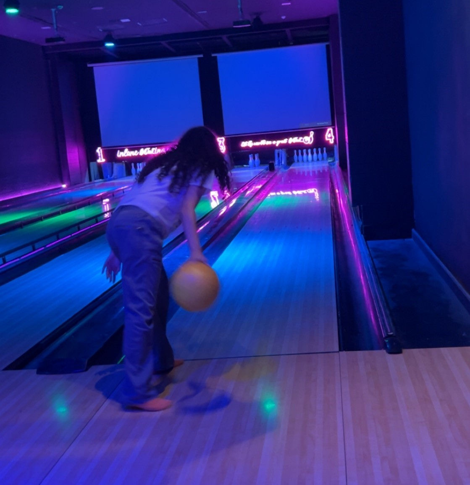

You came to my life at such unexpected time
but ever since you saw me that one time at tulip and we started talking you made my life alot alot alot better in a way i can never explain by words
that's why, I made this website, it's like ziad's way to express how I feel in way that my words can never
this was our last junior year day, when I was taking this picture I hoped it becomes a memory that we can look at someday in the future
this day we where playing bowling, none of us really knew how to play it
but this didn't really matter because we had lots of fun, personally this was and will forever be one of my favourite days ever
I'm not sure if i showed you how much i enjoyed it but I LOVED IT
hope we can go play there one more time so I can win this time

In this pic You took my phone and i have no idea what were you doing (but honestly I didn't care as I trust you)
when you gave me my phone back I found it like this, it was funny not gonna lie
You better know that I won't be changing it anytime soon, you did it by yourself not me
Things I hate about you
I could kill you someday cuz of them
Your obsession over the weeknd
How you always keep finding a hot barista everytime you go to a cafe
Here you were showing me a picture of your lovely cat, Mango
but damn i couldn't help but to notice how pretty you were in that pic
your eyes and just everything,
specially this cute smile
Things I love about you
I couldn't remember everything so that's just a few tiny 3 things in my mind now out of endless things
your eyes
your music taste
How you understand me
simply everything about Roaa
I just wanted to say thank you for everything thank you for being there for me when i needed, thank you for always supporting me
thank you for beeing the best friend i have. I'm not good with people and that makes it very hard for me to get with people
but somehow, maybe it was fate, this one day at tulip made my life alot alot alot better
you have no idea how happy you make me, how you always make my day better, how you always make me pause the games to text you.
And i just can't talk enough about this little book you made me, it made me happy like a 4 years old getting candy
it made me think and realize how lucky i am to have you in my life
you became from someone i don't know to someone I will lose anything but not you, i realized that when i saw myslef scared to lose you<
i hope i never lose you, I fr want you always with me, you even became the reason i get mad most of the times when i think that you are mad at me or don't wanna talk to me
that's the reason i get mad most of the times, i overthink alot and when i think that u don't like me, it makes me depressed,
when you made me this gift you gave me i kept thinking what can i also make for her, i didn't want to buy i wanted to make something by myslef
i kept thinking till i thought of this idea, i wanted something to show how much you mean to me, and thank you for everything you did with and for me
i could never be thankful enough to have roro in my life, thanks for everything. hope we stay together forever